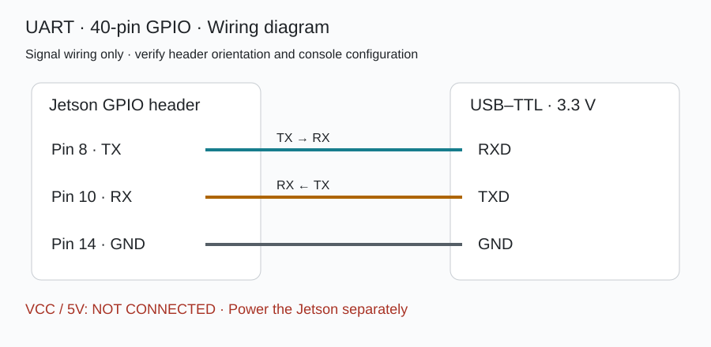
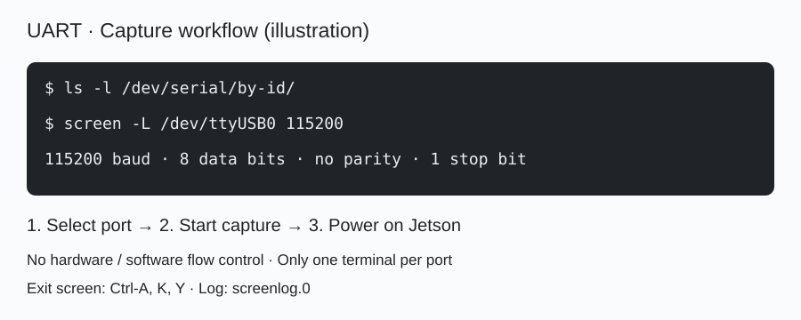

Jetson Firmware Maintenance Script
A Bash front-end to the NVIDIA flashing tools: environment checks, resource preparation, QSPI or NVMe flashing. Targets the Jetson Orin family; the supported range depends on the selected BSP, board configuration and vendor documentation.
Get and run
Review the script after downloading, then check the options or open the interactive menu. Select a verified L4T version explicitly before flashing.
curl -fL --proto '=https' -o jetson-jp62.sh \
https://tool.kervein.club/jetson/jetson-jp62.sh
bash jetson-jp62.sh --help # after reviewing the script
bash jetson-jp62.shBefore flashing
QSPI mode writes boot firmware; a wrong configuration can leave the board unbootable. NVMe mode rewrites the target storage and erases data. Back up your data and confirm carrier support, stable power and a recovery path. Required disk space is determined by the runtime pre-check.
Script modes
- detect
- Inspect the host and device state; performs no flashing.
- prep
- Download and prepare the BSP; optionally prepare a sample rootfs.
- qspi
- Flash QSPI boot firmware; the system disk is not the target.
- nvme
- Rewrites target storage, erases data. Uses the official initrd flash.
- target
- Update packages on the Jetson via apt; not equivalent to a QSPI upgrade.
Usage: bash jetson-jp62.sh --mode <mode> · Version, diagnostics, UART and offline options: see --help or the manual.
Legal notice · MIT License · Third-party licences
Legal notice and licence
This tool is an independent maintenance helper published under the A2VEC brand. It is not an NVIDIA product and has no affiliation with, authorisation from or endorsement by NVIDIA. NVIDIA, Jetson and JetPack are trademarks of NVIDIA Corporation.
The script and documentation are provided under the MIT License; redistributions must keep the copyright and licence notice. The original copyright notice is Copyright (c) 2026 Shippuurl; brand presentation does not change that ownership. MIT grants no rights to third-party trademarks or NVIDIA software.
The software is provided “AS IS”. To the maximum extent permitted by applicable law no express or implied warranty is given, including merchantability, fitness for a particular purpose and non-infringement; liability is limited as stated in the MIT text. This notice does not exclude liability that applicable law does not allow to be excluded.
The published script contains no NVIDIA firmware, bootloader or proprietary SDK. Third-party components obtained at runtime are governed by their own licences and the NVIDIA software package documentation; check the licence of the matching version before downloading, using or redistributing. Acknowledgement of this tool does not replace third-party licence requirements.
Users must confirm they are authorised to operate the device, prepare backups and a recovery plan, and verify module, carrier, BSP and system versions against official documentation. A passing pre-check or an available download URL is not a guarantee of compatibility, safety or flashing success. Third-party carriers are governed by their vendor's adaptation material.
MIT License · full text
MIT License Copyright (c) 2026 Shippuurl Permission is hereby granted, free of charge, to any person obtaining a copy of this software and associated documentation files (the "Software"), to deal in the Software without restriction, including without limitation the rights to use, copy, modify, merge, publish, distribute, sublicense, and/or sell copies of the Software, and to permit persons to whom the Software is furnished to do so, subject to the following conditions: The above copyright notice and this permission notice shall be included in all copies or substantial portions of the Software. THE SOFTWARE IS PROVIDED "AS IS", WITHOUT WARRANTY OF ANY KIND, EXPRESS OR IMPLIED, INCLUDING BUT NOT LIMITED TO THE WARRANTIES OF MERCHANTABILITY, FITNESS FOR A PARTICULAR PURPOSE AND NONINFRINGEMENT. IN NO EVENT SHALL THE AUTHORS OR COPYRIGHT HOLDERS BE LIABLE FOR ANY CLAIM, DAMAGES OR OTHER LIABILITY, WHETHER IN AN ACTION OF CONTRACT, TORT OR OTHERWISE, ARISING FROM, OUT OF OR IN CONNECTION WITH THE SOFTWARE OR THE USE OR OTHER DEALINGS IN THE SOFTWARE.
What you need before flashing
- Jetson boardOrin Nano / Orin NX (t234). Module and carrier are confirmed by the EEPROM reading (Board ID / SKU).
- Power supply19 V barrel input. Do not rely on USB-C power alone while flashing or in recovery.
- USB-C data cableConnects the board to the host in recovery (APX) mode. Must carry data; charge-only cables are not detected.
- Jumper capShorts FC REC to GND to enter recovery. Follow the carrier silkscreen; on the DevKit it is the 12-pin header, FC REC / GND (pins 9 and 10).

Entering recovery (flash mode)
The board must be in Force Recovery Mode before flashing. All three methods come from NVIDIA's own documentation; pick the one that matches the board's current state.
A From power-off (recommended)
- Disconnect power and confirm the board is fully off.
- Fit a jumper across pins 9 and 10 of the Button Header (FC REC → GND).
- Reconnect power: the board enters recovery instead of booting.
- Remove the jumper once the host detects the device; leaving it fitted makes the next power-up enter recovery again.
B While already powered on
- First fit a jumper across pins 9 and 10 of the Button Header.
- Then briefly connect pins 7 and 8 to trigger a reset.
- Remove both jumpers once the host detects the device.
C From the board itself
If you can already log in, switch straight to recovery: sudo reboot --force forced-recovery
Remove the jumper once the host detects the device.
Leaving it on makes the board enter recovery again at the next power-up.
Order: power off → fit the jumper (9/10) → power on → remove it once lsusb shows 0955:7523 or 0955:7623.


Check: the host's lsusb shows 0955:<nnnn> NVIDIA Corp. — 7523 = Orin Nano 8GB, 7623 = Orin Nano 4GB (official model table). If nothing appears, power-cycle and try again.
NVIDIA · Force Recovery Mode（Orin Nano DevKit User Guide）NVIDIA · Jetson Linux R36.4.3 Quick StartNVIDIA Developer Forums · How to Get Into Recovery Mode
Flashing and verification


When ready, go back to “Get and run” on the left and run --mode detect before deciding whether to flash.
Serial diagnostics (UART)
irm https://raw.githubusercontent.com/Shippuurl/jetson-jp62/main/uart-logs.ps1 | iex
bash <(curl -fsSL https://raw.githubusercontent.com/Shippuurl/jetson-jp62/main/uart-logs.sh)
UART logs · ZIP · GitHub rules ↗
Standalone serial capture: connect USB-TTL, select the port and save logs. No recovery mode or flashing is required.
1 What you need
- USB-TTL serial adapter (CP2102 / CH340 / FT232 class, 3.3 V level)
- Three jumper wires (female-female)
2 Wiring (40-pin header)
- Pin 8 UART_TX → adapter RXD
- Pin 10 UART_RX → adapter TXD
- GND to GND (any of pins 6 / 9 / 14 / 25 / 30 / 34 / 39)
115200 8N1, no flow control. TX and RX must cross; wired TX-to-TX you receive nothing at all.

3 Capturing
- Built into the script:
bash jetson-jp62.sh --mode uart(auto-detects /dev/ttyUSB*, 30 s by default) - Manually:
screen /dev/ttyUSB0 115200(exit with Ctrl-A then K), orminicom -D /dev/ttyUSB0 -b 115200 - Start capture before powering on. Only output routed to this UART can be captured; early boot output on the 40-pin UART is not guaranteed.
Host: COMx / /dev/ttyUSBx. Board-side ttyTHS numbering and the debug console depend on the carrier and BSP. Verify the actual console routing.

4 Where it stalls
- No boot output: check port, wiring and console configuration first; this does not establish a firmware fault
- Stops in UEFI → bootloader or device-tree configuration
- Hangs in kernel → drivers, root filesystem, storage
- Reaches getty then reboots → application or systemd unit
ProventusNova · How to NVIDIA Jetson Orin Nano UART ConsoleNVIDIA Developer Forums · UART1 on expansion pins 8/10JetsonHacks · Serial Debug Console (115200 8N1)